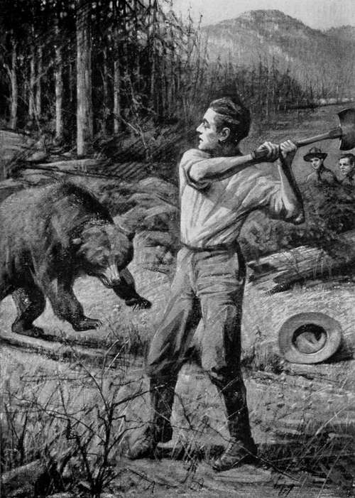

The Honey Seekers. Part 3
Description
This section is from the book "The Boy Scouts of Woodcraft Camp", by Thornton W. Burgess. Also available from Amazon: The Boy Scouts Of Woodcraft Camp.
The Honey Seekers. Part 3
Had Jim been aware of the presence of the two cubs he would have adopted a very different course of action. He was counting on the fact that despite its great size and immense strength the black bear is one of the most timid of all wild animals in the presence of man unless wounded, cornered or called upon to protect its young. Perhaps timidity is not quite a fair indictment. Let us say rather that of all wild animals none has come to have a more wholesome respect for man, and it is a well-known fact that not even a deer will bolt quicker at man's approach than will this black comedian of the big woods.
It was with this fact in mind that the guide advanced a few steps and suddenly sent forth an ear-splitting whoop. Things happened then with a rapidity that left no time for thought. Walter stoutly maintains to this day that the bear neither slid nor climbed down—that she simply let go and dropped. Certain it is that the echo of Jim's wild yell was still ringing in the woods when she landed with a thump that brought forth a grunt. Then, instead of the mad flight on which the guide had counted, she reared on her haunches with her back to the tree, growling savagely, her little pig eyes red with rage.
" Run!" He Yelled
Big Jim took in the situation at a glance. " Run I " he yelled, himself holding his ground and swinging aloft his double edged axe.
Even as he uttered the warning the bear charged. Walter, who stood a little to one side, unconscious of what he was doing, hurled the pail he was holding full at the angry beast and turned to run. This proved the salvation of Big Jim. The rolling clattering object distracted the bear's attention for an instant. She paused long enough to give the pail a vicious blow which by chance sent it clattering noisily into the old windfall behind which the cubs had taken refuge. There was a frightened squeal followed by the sound of scurrying feet among dead leaves.
Big Jim heard the squeal and understood. " Cubs, by gum ! " he exclaimed.
The bear heard too. She stopped, irresolute, half turned toward the windfall, then faced the guide and reared, growling savagely. There was another faint squeal from beyond the windfall. The bear dropped to all fours and slowly retreated in the direction of her cubs, pausing every few steps to turn and growl threateningly over her shoulder.
It was the guide's opportunity to retire in good order and he made haste to avail himself of it, reaching the clearing just in time to see Chip and Tug disappear down the home trail on the far side.
Now that the danger was over the humor of the situation tickled him immensely and as he with Walter and Woodhull approached Billy all three were finding relief in a hearty laugh.
Ail at once they became aware that there was something unusual about Billy. He was dancing around the old stump like a lunatic, yelling, " I've got him, Jim ! I've got him ! I've got him ! " He was without his jacket and his shirt was in tatters. His face and arms were bleeding from deep scratches.
The guide gaped at him open mouthed. " Great smoke, sonny," he drawled, "yerlook as if yer was th' one thet had met a bar, not us."
"I have, Jim, I have I It's in there!" yelped Billy.
The guide peeped into the hollow, and a long drawn whistle of astonishment escaped him. Then abruptly his face sobered and he cast an apprehensive glance back at the forest.
"Must hev been three cubs," he said, reaching in and catching the whimpering little bear by the scruff of the neck. " Bars don't generally hev but two, but I've heerd say thet sometimes they has three. This leetle chap must hev strayed off while his mother was a-clawin' fer thet honey. I reckon we better be movin' right along. It ain't goin't' be no ways healthy round these parts when Mrs. Bar misses this leetle chap."
Wrapping the cub in Billy's jacket once more Big Jim set the pace for camp at a rate that kept the smaller boys on a dog trot, not without many a fearful glance behind them.
Camp was reached safely, where the news of Billy's capture spread like wild-fire, and for once he found himself the hero he had so often pictured himself; wherever he went he was the center of an admiring group.
The doctor was petitioned in a round robin signed by every member of the camp for permission to keep the cub as a pet. This was granted, and " Honey," as he was called, soon became one of the most important members of Woodcraft, where his droll antics were a constant source of amusement.
The Delawares were jubilant, for Billy's prize scored them fifty points, and when a few days later the second bee tree was successfully lined out and this time the honey obtained without adventure, Billy's popularity was secure for all time, for this also added fifty points, as he had foreseen it would.
" He was a harum-scarum before, and this sure will be the ruin of him," Woodhull bewailed to his chum, Seaforth.
But Woodhull was wrong. There was a change in Billy. He was the same lovable, light-hearted boy as before, but the careless, reckless spirit that had so often led him into mischief was lacking. For the first time he seemed to have a serious purpose in' life. And it dated back to the morning after the lonely night in the forest. Billy was findings himself.
" I reckon he did hear a bar thet night," said Big Jim to the doctor as they discussed Billy's episode with the cub. And Billy knows he did.
Continue to: